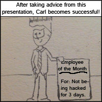

What is Password Guessing?There are a few different types of password guessing; however we will be discussing how someone could use this technique to gain access to your social networking account. A password guessing attack involves any would-be hacker simply attempting to logically guess your password under the assumption you have a weak password. What defines a weak password? A weak password is a password that can be easily guessed. It can either be incredibly common (such as "123456" or "iloveyou") (Vijayan, 2010) or something predictable based on your personality (Hale, n.d.) such as the name of your dog or your partner. A hacker uses this common knowledge to attempt to guess your weak password. How can I prevent this? Having your password guessed is very simple to prevent. Simply make your passwords complex ("Create strong passwords", n.d.). By increasing the strength of your password you can easily avoid the headache and heartache of having your accounts compromised. Things to avoid when creating a strong password: There are a few simple rules you should follow when creating your complex password:Do not use any words found in the dictionary. This includes manipulating words such as spelling them backwards and misspelling it. Do not use any common sequences (such as "qwerty") or re-iterated characters (such as "aaaaaa"). Steer clear of using any personal information in your passwords. ("Creating strong passwords", n.d.) A simple way to create complex passwords: Start by conjuring up a phrase you can easily remember. Such as: 'ILikeSecurity'. Remove any spaces and begin substituting characters. Alternate the casing of the letters. 'ILikeSecurity' becomes '1LIk35EcUr1ty'. Use part of the website address as the foundation to alter the beginning and end of your password. If we were using 'www.facebook.com' we would take 'f' and 'k' and append them to the beginning and end. '1LIk35EcUr1ty' becomes 'f1LIk35EcUr1tyk'. Add another level of complexity by adding some random numbers and punctuation. 'f1LIk35EcUr1tyk' becomes '28-f1LIk35EcUr1tyk!'. To create different passwords for each website you use, simply change the letters from the domain which you added in the third step (Jones, 2009). |

|